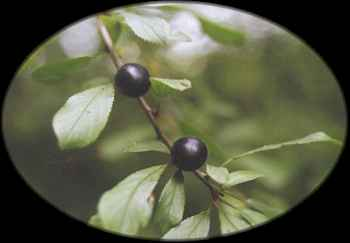

Straif
Blackthorn (April 15 - May 12)

Blackthorn - The blackthorn (Prunus spinosa L.) is a relative of cherries and plums, and is the source of the sloe fruit. It is a thorny shrub growing to 12 feet, often forming thickets on south-facing slopes. The blue-black fruits are edible, but bitter until after the first frost. Blackthorns are seldom cultivated in North America. They are members of the Rose family (Rosaceae). Curtis Clark